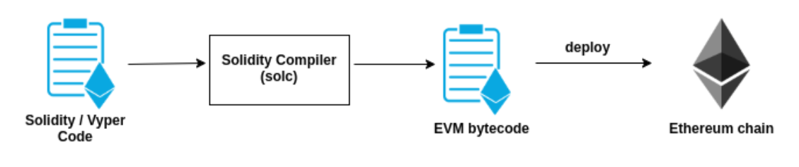
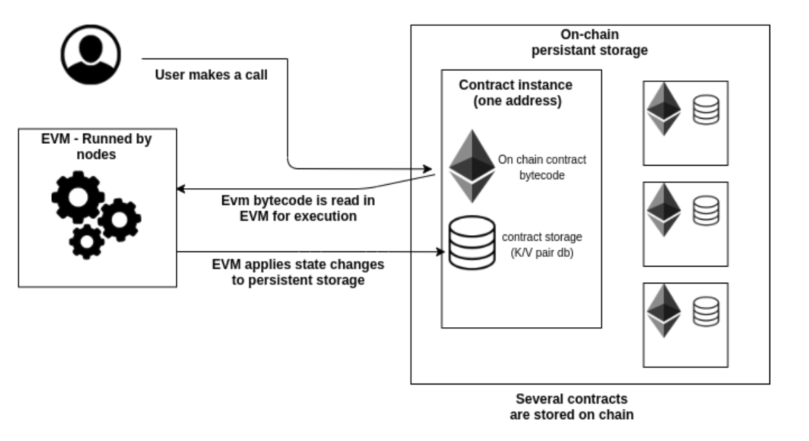
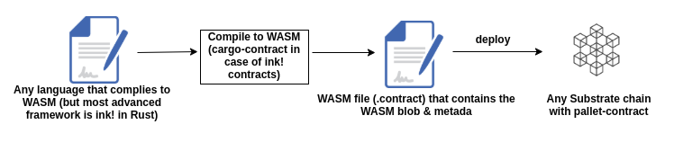

Getting Started
Welcome to OpenBrush documentation ! This documentation aim to guide you through the usage of OpenBrush library.
What is OpenBrush
OpenBrush is a library for smart contract development on ink! It provides standard contracts (based on PSP), as well as useful contracts and macros to help you build ink! smart contracts.
Why OpenBrush
OpenBrush attempt to analogize OpenZeppelin perfectly with Rust’s paradigm, enabling users to import contracts implemented by another user without problems and reuse the code. There was a need to have a library that can provide base implementations of ERCs and to import/reuse them by customizing their own logic.
Overview
This doc contains example of how the library can be use & how to customize the base implementation.
- PSP22 shows an example of how you can reuse the implementation of psp20 token(by the same way you can reuse psp721 and psp1155).
- Access Control shows how you can use the implementation of access-control and psp721 together to provide rights to mint and burn NFT tokens.
- Ownable shows how you can use the implementation of ownable and psp1155 together to provide rights to mint and burn tokens.
- ReentrancyGuard shows how you can use the implementation of non_reentrant modifier to prevent reentrancy during certain functions.
- Pausable shows how you can use the implementation of pausable contract and modifiers.
- TimelockController shows how you can use the implementation of timelock-controller to execute some transaction with some delay via governance.
- PaymentSplitter shows how you can use the implementation of payment-splitter to split received native tokens between participants of the contract.
Overview
This example shows how you can reuse the implementation of
psp20 token(by the same way you can reuse
psp721 and psp1155). Also, this example shows how you can customize
the logic, for example, to not allow transfer tokens to hated_account.
Steps
- Include dependencies
psp20andbrushin cargo file.
[dependencies]
...
psp20 = { version = "0.3.0-rc1", git = "https://github.com/Supercolony-net/openbrush-contracts", default-features = false }
brush = { version = "0.3.0-rc1", git = "https://github.com/Supercolony-net/openbrush-contracts", default-features = false }
[features]
default = ["std"]
std = [
...
"psp20/std",
"brush/std",
]
- Replace
ink::contractmacro bybrush::contract. Import everything from according trait modules.
#![allow(unused)] fn main() { #[brush::contract] pub mod my_psp20 { use psp20::traits::*; use ink_storage::Lazy; use ink_prelude::{string::String, vec::Vec}; }
- Declare storage struct and declare the fields related to
PSP22StorageandPSP22MetadataStoragetraits. Then you need to derivePSP22StorageandPSP22MetadataStoragetraits and mark according fields with#[PSP22StorageField]and#[PSP22MetadataStorageField]attributes. Deriving these traits allow you to reuse the default implementation ofPSP22andPSP22Metadata.
#![allow(unused)] fn main() { #[ink(storage)] #[derive(Default, PSP22Storage, PSP22MetadataStorage)] pub struct MyPSP22 { #[PSP22StorageField] psp20: PSP22Data, #[PSP22MetadataStorageField] metadata: PSP22MetadataData, } }
- Inherit implementation of
PSP22andPSP22Metadatatraits. You can customize(override) methods in thisimplblock.
#![allow(unused)] fn main() { impl PSP22 for MyPSP22 {} impl PSP22Metadata for MyPSP22 {} }
- Define constructor and your basic version of
PSP22contract is ready.
#![allow(unused)] fn main() { impl MyPSP22 { #[ink(constructor)] pub fn new(_total_supply: Balance, name: Option<String>, symbol: Option<String>, decimal: u8) -> Self { let mut instance = Self::default(); Lazy::set(&mut instance.metadata.name, name); Lazy::set(&mut instance.metadata.symbol,symbol); Lazy::set(&mut instance.metadata.decimals,decimal); instance._mint(instance.env().caller(), _total_supply); instance } } }
- Customize it by adding hated account logic. It will contain two public methods
set_hated_accountandget_hated_account. Also we will override_before_token_transfermethod inPSP22implementation. And we will add a new field to structurehated_account: AccountId
#![allow(unused)] fn main() { #[ink(storage)] #[derive(Default, PSP22Storage, PSP22MetadataStorage)] pub struct MyPSP22 { #[PSP22StorageField] psp20: PSP22Data, #[PSP22MetadataStorageField] metadata: PSP22MetadataData, // fields for hater logic hated_account: AccountId, } impl PSP22 for MyPSP22 { // Let's override method to reject transactions to bad account fn _before_token_transfer(&mut self, _from: AccountId, _to: AccountId, _amount: Balance) { assert!(_to != self.hated_account, "{}", PSP22Error::Custom(String::from("I hate this account!")).as_ref()); } } impl PSP22Metadata for MyPSP22 {} impl MyPSP22 { #[ink(constructor)] pub fn new(_total_supply: Balance, name: Option<String>, symbol: Option<String>, decimal: u8) -> Self { let mut instance = Self::default(); Lazy::set(&mut instance.metadata.name, name); Lazy::set(&mut instance.metadata.symbol,symbol); Lazy::set(&mut instance.metadata.decimals,decimal); instance._mint(instance.env().caller(), _total_supply); instance } #[ink(message)] pub fn set_hated_account(&mut self, hated: AccountId) { self.hated_account = hated; } #[ink(message)] pub fn get_hated_account(&self) -> AccountId { self.hated_account.clone() } } }
Overview
This example shows how you can use the implementation of access-control and psp721 together to provide rights to mint and burn NFT tokens.
Steps
- Include dependencies
psp721,access-controlandbrushin cargo file.
[dependencies]
...
psp721 = { version = "0.3.0-rc1", git = "https://github.com/Supercolony-net/openbrush-contracts", default-features = false }
access-control = { version = "0.3.0-rc1", git = "https://github.com/Supercolony-net/openbrush-contracts", default-features = false }
brush = { version = "0.3.0-rc1", git = "https://github.com/Supercolony-net/openbrush-contracts", default-features = false }
[features]
default = ["std"]
std = [
...
"psp721/std",
"access-control/std",
"brush/std",
]
- Replace
ink::contractmacro bybrush::contract. Import everything from according trait modules.
#![allow(unused)] fn main() { #[brush::contract] pub mod my_access_control { use psp721::traits::*; use access_control::traits::*; use brush::modifiers; use ink_prelude::vec::Vec; }
- Declare storage struct and declare the fields related to
PSP721StorageandAccessControlStoragetraits. Then you need to derivePSP721StorageandAccessControlStoragetraits and mark according fields with#[PSP721StorageField]and#[AccessControlStorageField]attributes. Deriving these traits allow you to reuse the default implementation ofIPSP721andAccessControl.
#![allow(unused)] fn main() { #[ink(storage)] #[derive(Default, PSP721Storage, AccessControlStorage)] pub struct PSP721Struct { #[PSP721StorageField] psp721: PSP721Data, #[AccessControlStorageField] access: AccessControlData, } }
- Inherit implementation of
IPSP721andAccessControltraits. You can customize(override) methods in thisimplblock.
#![allow(unused)] fn main() { impl IPSP721 for PSP721Struct {} impl AccessControl for PSP721Struct {} }
- Define constructor and your basic version of
IPSP721contract is ready.
#![allow(unused)] fn main() { impl PSP721Struct { #[ink(constructor)] pub fn new() -> Self { Self::default() } } }
- Customize it by adding access control logic. We will implement
IPSP721Minttrait. It will use modifieronly_minter(it verifies that caller has minter role). Also, we need to update constructor to grant minter role to caller by default.
#![allow(unused)] fn main() { const MINTER: RoleType = brush::blake2b_256_as_u32!("MINTER"); impl PSP721Struct { #[ink(constructor)] pub fn new() -> Self { let mut instance = Self::default(); let caller = instance.env().caller(); instance._init_with_admin(caller); // We grant minter role to caller in constructor, so he can mint/burn tokens instance.grant_role(MINTER, caller); instance } } impl IPSP721 for PSP721Struct {} impl AccessControl for PSP721Struct {} impl IPSP721Mint for PSP721Struct { #[ink(message)] #[modifiers(only_role(MINTER))] fn mint(&mut self, id: Id) { self._mint(id); } #[ink(message)] #[modifiers(only_role(MINTER))] fn burn(&mut self, id: Id) { self._burn(id); } } }
Overview
This example shows how you can use the implementation of
access-control and
psp1155 together to provide only owner rights to mint and burn tokens.
Steps
- Include dependencies
psp1155,ownableandbrushin cargo file.
[dependencies]
...
psp1155 = { version = "0.3.0-rc1", git = "https://github.com/Supercolony-net/openbrush-contracts", default-features = false }
ownable = { version = "0.3.0-rc1", git = "https://github.com/Supercolony-net/openbrush-contracts", default-features = false }
brush = { version = "0.3.0-rc1", git = "https://github.com/Supercolony-net/openbrush-contracts", default-features = false }
[features]
default = ["std"]
std = [
...
"psp1155/std",
"ownable/std",
"brush/std",
]
- Replace
ink::contractmacro bybrush::contract. Import everything from according trait modules.
#![allow(unused)] fn main() { #[brush::contract] pub mod ownable { use psp1155::traits::*; use ownable::traits::*; use brush::modifiers; use ink_prelude::vec::Vec; }
- Declare storage struct and declare the fields related to
PSP1155StorageandOwnableStoragetraits. Then you need to derivePSP1155StorageandOwnableStoragetraits and mark according fields with#[PSP1155StorageField]and#[OwnableStorageField]attributes. Deriving these traits allow you to reuse the default implementation ofIPSP1155andOwnable.
#![allow(unused)] fn main() { #[ink(storage)] #[derive(Default, PSP1155Storage, OwnableStorage)] pub struct PSP1155Struct { #[PSP1155StorageField] psp1155: PSP1155Data, #[OwnableStorageField] ownale: OwnableData, } }
- Inherit implementation of
IPSP1155andOwnabletraits. You can customize(override) methods in thisimplblock.
#![allow(unused)] fn main() { impl Ownable for PSP1155Struct {} impl IPSP1155 for PSP1155Struct {} }
- Define constructor to define owner as the contract initiator and your basic version
of
IPSP1155contract is ready.
#![allow(unused)] fn main() { impl PSP1155Struct { #[ink(constructor)] pub fn new() -> Self { let mut instance = Self::default(); let caller = instance.env().caller(); instance._init_with_owner(caller); instance } } }
- Customize it by adding ownable logic. We will implement
IPSP1155Minttrait. It will callonly_ownerfunction inside to verify that caller is the owner.
#![allow(unused)] fn main() { impl IPSP1155Mint for PSP1155Struct { #[ink(message)] #[modifiers(only_owner)] fn mint(&mut self, to: AccountId, id: Id, amount: Balance) { self._mint(to, id, amount); } #[ink(message)] #[modifiers(only_owner)] fn burn(&mut self, from: AccountId, id: Id, amount: Balance) { self._burn(from, id, amount); } } }
Overview
This example shows how you can use the non_reentrant modifier to prevent reentrancy into certain functions. In this example we will create two contracts:
my_flipper_guard- this contract is the simple version of flipper but methodflipwill be marked withnon_reentrantmodifier + we will add additional method, also marked withnon_reentrant, which will ask another contract to callflipof ourflipper.flip_on_me- is a contract which has only one methodflip_on_me. This method will try to callflipon caller (it means that caller must be a contract with methodflip).
MyFlipper
Steps
- Include dependencies
reentrancy-guardandbrushin cargo file.
[dependencies]
...
reentrancy-guard = { version = "0.3.0-rc1", git = "https://github.com/Supercolony-net/openbrush-contracts", default-features = false }
brush = { version = "0.3.0-rc1", git = "https://github.com/Supercolony-net/openbrush-contracts", default-features = false }
crate-type = [
"cdylib",
# This contract will be imported by FlipOnMe contract, so we need build this crate also like a `rlib`
"rlib",
]
[features]
default = ["std"]
std = [
...
"brush/std",
]
- To declare the contract, you need to use
brush::contractmacro instead ofink::contract. Import everything fromreentrancy-guardtrait module.
#![allow(unused)] fn main() { #[brush::contract] pub mod my_flipper_guard { use reentrancy_guard::traits::*; use brush::modifiers; use ink_env::call::FromAccountId; use crate::flip_on_me::CallerOfFlip; }
- Declare storage struct and declare the field for
ReentrancyGuardStoragetrait. Then you need to deriveReentrancyGuardStoragetrait and mark the field with#[ReentrancyGuardStorageField]attribute. Deriving this trait allows you to usenon_reentrantmodifier.
#![allow(unused)] fn main() { #[ink(storage)] #[derive(Default, ReentrancyGuardStorage)] pub struct MyFlipper { #[ReentrancyGuardStorageField] guard: ReentrancyGuardData, value: bool, } }
- After that you can add
non_reentrantmodifier toflipandcall_flip_on_memethods.
#![allow(unused)] fn main() { impl MyFlipper { #[ink(constructor)] pub fn new() -> Self { Self::default() } #[ink(message)] pub fn get_value(&self) -> bool { self.value } #[ink(message)] #[brush::modifiers(non_reentrant)] pub fn flip(&mut self) { self.value = !self.value; } #[ink(message)] #[modifiers(non_reentrant)] pub fn call_flip_on_me(&mut self, callee: AccountId) { // This method will do a cross-contract call to callee account. It calls method `flip_on_me`. // Callee contract during execution of `flip_on_me` will call `flip` of this contract. // `call_flip_on_me` and `flip` is marked with `non_reentrant` modifier. It means, // that call of `flip` after `call_flip_on_me` must fails. let mut flipper: CallerOfFlip = FromAccountId::from_account_id(callee); flipper.flip_on_me(); } } }
- To simplify cross contract call to
FlipOnMecontract let's create a wrapper around contract's account id. For that we will define another contract in this crate with#[ink_lang::contract(compile_as_dependency = true)]with empty methods but with the same signature as in original contract.
#![allow(unused)] fn main() { /// It is stub implementation of contract with method `flip_on_me`. /// We need this implementation to create a wrapper around account id of contract. /// With this wrapper we easy can call method of some contract. /// Example: /// ``` /// let mut flipper: CallerOfFlip = FromAccountId::from_account_id(callee); /// flipper.flip_on_me(); /// ``` #[ink_lang::contract(compile_as_dependency = true)] pub mod flip_on_me { #[ink(storage)] pub struct CallerOfFlip {} impl CallerOfFlip { #[ink(constructor)] pub fn new() -> Self { unimplemented!() } } impl CallerOfFlip { #[ink(message)] pub fn flip_on_me(&mut self) { unimplemented!() } } } }
FlipOnMe
It's a simple contract which doesn't use any logic from the brush, so you can use simple ink! here.
Steps
- Define
FlipOnMecontract. It has the only methodflip_on_me, which will callflipon caller.
#![allow(unused)] fn main() { #[ink_lang::contract] pub mod flip_on_me { use ink_env::call::FromAccountId; use my_flipper_guard::my_flipper_guard::MyFlipper; #[ink(storage)] #[derive(Default)] pub struct FlipOnMe {} impl FlipOnMe { #[ink(constructor)] pub fn new() -> Self { Self::default() } #[ink(message)] pub fn flip_on_me(&mut self) { let caller = self.env().caller(); // This method will do a cross-contract call to caller account. It will try to call `flip` let mut flipper: MyFlipper = FromAccountId::from_account_id(caller); flipper.flip(); } } } }
- To simplify cross contract call to
MyFlipperyou need to import the contract as dependency.
#![allow(unused)] fn main() { [dependencies] ... my_flipper_guard = { path = "../flipper", default - features = false, features = ["ink-as-dependency"] } ... [features] ... }
Testing
For testing, you can run according integration test. Or you need to deploy both
contracts and call call_flip_on_me on MyFlipper
account and pass the account id of FlipOnMe contract.
Overview
This example shows how you can reuse the implementation of
pausable in Flipper contract to flip only if the contract is paused.
Steps
- Include dependencies
pausableandbrushin cargo file.
[dependencies]
...
pausable = { version = "0.3.0-rc1", git = "https://github.com/Supercolony-net/openbrush-contracts", default-features = false }
brush = { version = "0.3.0-rc1", git = "https://github.com/Supercolony-net/openbrush-contracts", default-features = false }
[features]
default = ["std"]
std = [
...
"pausable/std",
"brush/std",
]
- Replace
ink::contractmacro bybrush::contract. Import everything from according trait modules.
#![allow(unused)] fn main() { #[brush::contract] pub mod my_pausable { use pausable::traits::*; }
- Declare storage struct and declare the field related to
PausableStorageThen you need to derivePausableStoragetrait and mark according field with#[PausableStorageField]attribute. Deriving this trait allows you to reuse the default implementation ofPausable.
#![allow(unused)] fn main() { #[ink(storage)] #[derive(Default, PausableStorage)] pub struct MyFlipper { #[PausableStorageField] pause: PausableData, flipped: bool, } }
- Inherit implementation of
Pausable. You can customize(override) methods in thisimplblock.
#![allow(unused)] fn main() { impl Pausable for MyFlipper {} }
- Define constructor and your basic version of
Pausablecontract is ready.
#![allow(unused)] fn main() { impl MyFlipper { #[ink(constructor)] pub fn new() -> Self { Self::default() } } }
- Customize it by adding flipper logic. We will implement
flipmethod marked withwhen_pausedmodifier.
#![allow(unused)] fn main() { impl MyFlipper { #[ink(constructor)] pub fn new() -> Self { Self::default() } #[ink(message)] #[brush::modifiers(when_paused)] pub fn flip(&mut self) { self.flipped = !self.flipped; } } impl Pausable for MyFlipper {} }
Overview
This example shows how you can reuse the implementation of timelock-controller.
Steps
- Include dependencies
timelock-controllerandbrushin cargo file.
[dependencies]
...
timelock-controller = { version = "0.3.0-rc1", git = "https://github.com/Supercolony-net/openbrush-contracts", default-features = false }
brush = { version = "0.3.0-rc1", git = "https://github.com/Supercolony-net/openbrush-contracts", default-features = false }
[features]
default = ["std"]
std = [
...
"timelock-controller/std",
"brush/std",
]
- Replace
ink::contractmacro bybrush::contract. Import everything from according trait modules.
#![allow(unused)] fn main() { #[brush::contract] pub mod my_timelock_controller { use timelock_controller::traits::*; use ink_prelude::vec::Vec; }
TimelockControlleris an extension forAccessControl, so you need to impl stuff related to both modules. Declare storage struct and declare the fields related toTimelockControllerStorageandAccessControlStorage. Then you need to deriveTimelockControllerStorageandAccessControlStoragetraits and mark according fields with#[TimelockControllerStorageField]and#[AccessControlStorageField]attributes. Deriving these traits allows you to reuse the default implementation ofTimelockController(andAccessControl).
#![allow(unused)] fn main() { #[ink(storage)] #[derive(Default, AccessControlStorage, TimelockControllerStorage)] pub struct TimelockStruct { #[AccessControlStorageField] access: AccessControlData, #[TimelockControllerStorageField] timelock: TimelockControllerData, } }
- Inherit implementation of
TimelockControllerandAccessControltraits. You can customize(override) methods in thisimplblock.
#![allow(unused)] fn main() { // `TimelockController` is an extension for `AccessControl`, so you need to impl stuff related to both modules. impl AccessControl for TimelockStruct {} impl TimelockController for TimelockStruct {} }
- Define constructor and your basic version of
TimelockControllercontract is ready.
#![allow(unused)] fn main() { impl TimelockStruct { #[ink(constructor)] pub fn new(min_delay: Timestamp, proposers: Vec<AccountId>, executors: Vec<AccountId>) -> Self { let mut instance = Self::default(); let caller = instance.env().caller(); // `TimelockController` and `AccessControl` have `_init_with_admin` methods. // You need to call it for each trait separately, to initialize everything for these traits. AccessControl::_init_with_admin(&mut instance, caller); TimelockController::_init_with_admin(&mut instance, caller, min_delay, proposers, executors); instance } } }
Overview
This example shows how you can reuse the implementation of payment-splitter.
Steps
- Include dependencies
payment-splitterandbrushin cargo file.
[dependencies]
...
payment-splitter = { version = "0.3.0-rc1", git = "https://github.com/Supercolony-net/openbrush-contracts", default-features = false }
brush = { version = "0.3.0-rc1", git = "https://github.com/Supercolony-net/openbrush-contracts", default-features = false }
# payment-splitter uses dividing inside, so your version of rust can require you to disable check overflow.
[profile.dev]
overflow-checks = false
[profile.release]
overflow-checks = false
[features]
default = ["std"]
std = [
...
"payment-splitter/std",
"brush/std",
]
- Replace
ink::contractmacro bybrush::contract. Import everything from according trait modules.
#![allow(unused)] fn main() { #[brush::contract] pub mod my_payment_splitter { use payment_splitter::traits::*; use ink_prelude::vec::Vec; }
- Declare storage struct and declare the field related to
PaymentSplitterStorageThen you need to derivePaymentSplitterStoragetrait and mark according field with#[PaymentSplitterStorageField]attribute. Deriving this trait allows you to reuse the default implementation ofPaymentSplitter.
#![allow(unused)] fn main() { #[ink(storage)] #[derive(Default, PaymentSplitterStorage)] pub struct SplitterStruct { #[PaymentSplitterStorageField] splitter: PaymentSplitterData, } }
- Inherit implementation of
PaymentSplitter. You can customize(override) methods in thisimplblock.
#![allow(unused)] fn main() { impl PaymentSplitter for SplitterStruct {} }
- Define constructor and your basic version of
PaymentSplittercontract is ready.
#![allow(unused)] fn main() { impl SplitterStruct { #[ink(constructor)] pub fn new(payees: Vec<AccountId>, shares: Vec<Balance>) -> Self { let mut instance = Self::default(); instance._init(payees, shares); instance } } }
Useful links
- Rust language is used
- Polkadot network info
- Patract labs knowledge base about ink! smart contract lang, Redspot utils for tests and deploymnt, ect
Comparison of EVM Smart Contracts & Substrate WASM Smart contracts
EVM
Background
Ethereum was the first Turing complete blockchain and was mainly developed because of limitations of Bitcoin's script. In order to execute Smart Contracts a sandbox environment is needed. The sandbox environment where Smart contracts are executed in Ethereum is the Ethereum virtual machine (EVM)
Bytecode
EVM uses a stack-based bytecode language called EVM bytecode. EVM bytecode is a series of OP_CODE (instructions) that are executed by the EVM. These OP_CODEs offers rather limited instructions compare to a full extend language (Java, WASM, ..)
The primitive of bytecode is 256bit integer which can be a big limitation as it is needed to use 256bit integer to do calculations on even low numbers and also it will take 256bit storage for any value stored on persistence.
The main OP_CODEs are SLOAD to load data, SSTORE to write a 256bit integer to storage and CALL to call another contract full list of OP_CODES. It's via these instructions that EVM interact with the chain.

Gas model
The incentive model of interacting with EVM is gas. It acts like a fee that is calculated for each instruction you are executing. Every instruction has a certain pre-calculated fee amount, and your total gas is the sum of all the instruction you will execute.
Please check the entire table of fees A gas fee is only due when interacting with EVM. There is no charge for the space on storage you are using, and it is resulting by having a ton of deadcode (or non-used contracts) staying on ethereum chain forever.
{kind=link}
Evm process

Substrate Contract-Pallet
Intro
pallet-contract is a module in Substrate (the framework to build blockchain on Polkadot). Its purpose is a sandbox environment providing WASM interpreter to execute smart contracts in WASM.

WASM interpreter
At the moment contract-pallet use wasmi as interpreter. Wasmi is a pure interpreter-type WASM virtual machine as execution of smart contract needs a high degree of correctness.
Storage rent & Gas
In order to incentives the deletion of unused code on chain, pallet-contract implemented a storage-rent principle.
Data that persist on chain (the contract code + all of its storage) will be charged. So every smart contract will have a rent to pay (small amount at every block). When the smart contract will not have enough fund to pay the rent the smart contract will become a Tombstone (storage will be deleted).
The gas system of ethereum (price depending on the complexity of the computation) is still present, but it is charged after the call is executed as it is basically a fee on the time of execution (the more time it takes for the node to execute your call the more you will pay). The pallet-contract will define the amount of gas
Contract code & instance are decoupled
Even though pallet-contract use an account model for their contracts alike ethereum does as well, there is still a big difference:
When you deploy a WASM smart contract on chain it will only create a hash of the WASM code, that's mean this contract will not have an address, nor an associated storage (so no interaction possible). As opposed to ethereum where every contract code deployed on chain will have a unique address (instance), and an associated storage.
When the WASM hash is on chain you can create as mush as instance of this contract code. Each instance will have a unique address to interact with as well as its own associated storage.
It is practical for:
- Different contract instance with different constructors can be instantiated to reduce the space needed on chain to store WASM code
- Storage and balance are decoupled from contract code logic, it can enable to patch or upgrade the underlying contract code
EVM vs contract-pallet
- Common point: they both are a sandbox to execute smart contracts
- The engine to execute contract is different. In ethereum, as it was the first blockchain to implement n sandbox environment, it is rather limited and slow compare to a wasm interpreter
- Storage-rent has been introduced in contract-pallet to incentives the deletion of unused code
- Contract pallet integrated a two-step-deployment to decouple contract code and contract instances
Comparing WASM Smart contracts to EVM smart contracts
- WASM is broadly adopted as EVM usage is only for EVM -> There is way more tools available for WASM development
- EVM bytecode can only be compiled from Solidity or Vyper while WASM can be compiled from a lot of Popular languages (Rust, C/C++, C#, Java, Typescript, Haxe, Kotlin and even from Solidity)
- Excellent integration of Rust to compile in WASM
- Lightweight: it produces lightweight binaries that can ship easily
- performance near native code (2x faster than Javascipt)
- Continually developed by major companies such as Google, Apple, Microsoft, Mozilla, and Facebook.